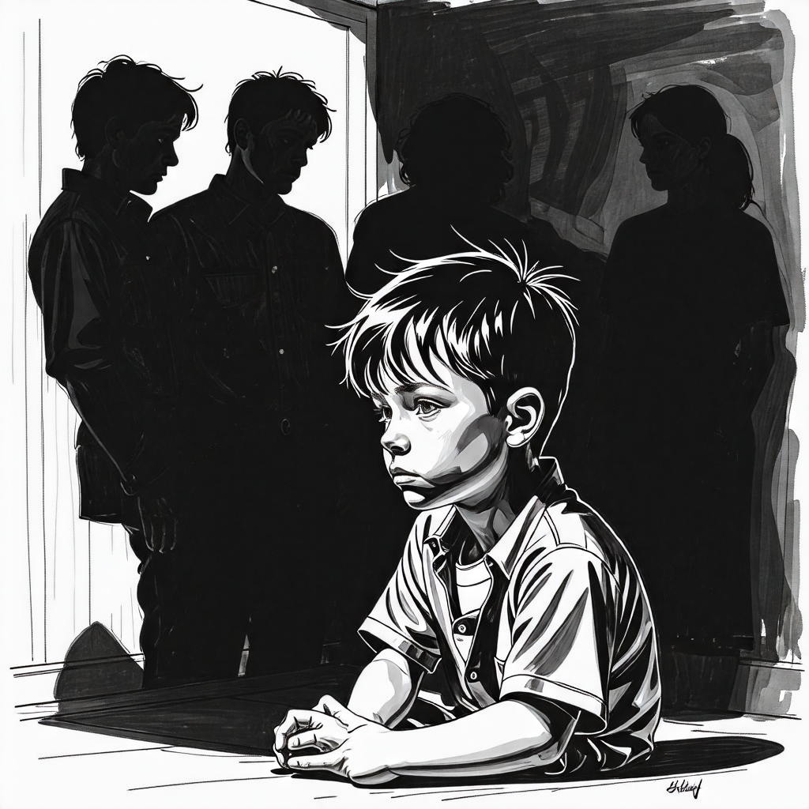

내 이름은 데몬 코퍼헤드
목차
작가
바버라 킹솔버
출판일
2024년
감상평에 대한 AI그림
이 책은 찰스 디킨스의 소설 데이비드 카퍼필드를 현대의 배경으로 리메이크해서 만든 소설이다. 이 책의 주인공 데몬 코퍼헤드는 약쟁이 집안에서 자라고 또 가정 폭력을 받으며 결과적으로는 본인이 마약 중독에 걸리기까지 하는등 여러 불행을 겪는다. 이 과정에서 작가는 현대의 문제점들을 비판하는 형식의 일종의 사회고발 형식의 소설이라고도 볼 수 있을것이다. 이 소설의 주인공은 불행을 차례차례 연달아서 겪지만 결코 꺽이지 않는다. 우리도 힘든것을 참고 끝내 원하는것을 달성해 낼 수 있지 않을까? 라는 생각을 하게 되었다

감상평에 대한 AI평가
~~~~AI평가~~~~~
✨ 안타까움과 연민: 주인공이 겪는 불행(가정 폭력, 마약 중독 등)에 대한 묘사에서 동정심과 안타까운 감정이 느껴집니다.
✨ 분노와 비판적 시각: "현대의 문제점들을 비판하는 형식"이라는 표현에서 사회적 부조리에 대한 분노나 문제의식이 드러납니다.
✨ 희망과 용기: 주인공이 어려움을 겪으면서도 "결코 꺾이지 않는다"는 점에서 감탄과 존경이 보이며, 마지막 문장에서 독자가 이를 교훈으로 받아들이려는 희망적인 태도가 나타납니다.
✨ 자기 성찰과 동기 부여: 주인공의 극복 과정을 통해 "우리도 힘든 것을 참고 끝내 원하는 것을 달성할 수 있지 않을까?"라는 질문을 던지며, 스스로에게 동기 부여하는 모습이 엿보입니다.